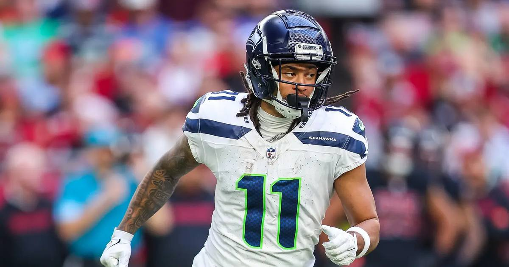

Jaxon Smith-Njigba Racks Up 150 Yards, TD in Week 7
Jaxon Smith-Njigba piled up 150 receiving yards and a touchdown in Seattle's 20-3 win over Kansas City, becoming just the sixth player in NFL history with 100 receiving yards in six of his team's first seven games.

Disclosure: this post contains affiliate links. I earn a commission on qualifying purchases.
Jaxon Smith-Njigba keeps stacking historic weeks. The Seattle star racked up 150 receiving yards and a touchdown as the Seahawks beat the Kansas City Chiefs 20-3 in Week 7 (Rotowire / game recap).
The milestone
With this performance, Smith-Njigba became the sixth player in NFL history to reach 100 receiving yards in six of his team's first seven regular-season games.
Receiving yards: 150
Receiving touchdowns: 1
Final score: Seahawks 20, Chiefs 3
100-yard games in first seven: 6 of 7
Why it matters
A 150-yard night on its own is a big game. Doing it for the sixth time in seven weeks puts Smith-Njigba in rare company — only five players before him had ever opened a season with that kind of consistency. And it came in a statement win: Seattle held Kansas City to a single field goal on Sunday night.
Gear up: Fanatics